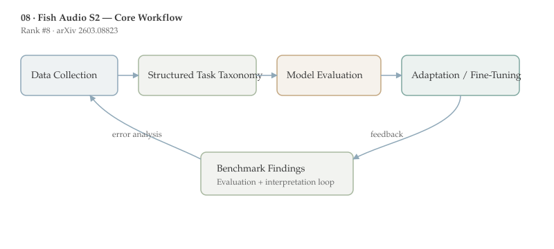

Fish Audio S2 is ranked #8 by upvotes in the HuggingFace daily list. This document follows the standard-depth format for papers 6-10 and emphasizes method detail, benchmark interpretation, and deployment implications.
Fish Audio S2 pushes open-source TTS toward instruction-following and dialogue-style generation by combining a staged data pipeline with multi-reward RL alignment. The system is designed for controllable speech, not only naturalness in single-speaker reading.
Its production emphasis is notable: the authors report a streaming inference engine with RTF 0.195 and sub-100ms time-to-first-audio, indicating that controllability gains are paired with deployable latency.
Who should read this and why: This paper is most relevant to speech teams building interactive agents, dubbing, audiobook generation, or multi-speaker dialogue systems where prompt-level control and low latency must coexist.
Modern neural TTS has moved from pipeline-heavy systems to large sequence models that map text or semantic tokens to speech representations. Yet many open models still expose limited control over style, emotion, role, or conversation structure. Instruction-following TTS aims to close this gap by letting users specify vocal behavior in natural language.
A second prerequisite is post-training in generative audio. Reinforcement-learning-style alignment is standard in LLMs, but less mature in TTS because reward design is harder: semantic correctness, audio quality, and speaker consistency can conflict.
Fish Audio S2 addresses this by reusing data-pipeline tools both for curation and reward shaping, attempting to reduce train-test and pretrain-posttrain mismatch. This design choice is methodologically important even beyond this specific model.
Within this daily batch, the paper connects to [[10-audio-specialist-heads|Audio-Specialist Heads]]: one focuses on better audio generation alignment, the other on better audio evidence use in multimodal reasoning.
The target problem is open-source TTS that can handle multi-speaker, multi-turn, instruction-conditioned generation without sacrificing real-time usability. Existing systems often trade off one axis: strong quality but weak control, or flexible control but unstable long-form speech.
The motivation is practical and commercial: voice interfaces increasingly require dynamic adaptation to role, tone, and context in the same session. Fixed-style synthesis no longer matches product demands for conversational AI.

The report describes a multi-stage training recipe and a staged data pipeline that includes video captioning, speech captioning, voice-quality assessment, and reward modeling. The key idea is unification: use a shared infrastructure to generate supervision, score outputs, and support RL alignment.
At a high level, the training flow is: base TTS pretraining on broad speech-text data, instruction-aware supervised tuning for controllability, then multi-reward RL to optimize semantic fidelity, acoustic quality, and speaker similarity. This mirrors LLM post-training stacks but adapted for waveform-level outputs.
The implementation also includes an SGLang-based inference engine for streaming deployment. The report emphasizes time-to-first-audio and runtime factor, indicating systems engineering was considered alongside model quality.
A useful abstraction is multi-objective optimization over rewards: $$J(\theta)=\mathbb{E}[r_{sem}+\alpha r_{qual}+\beta r_{spk}]$$ where balancing coefficients control tradeoffs between instruction faithfulness, perceptual quality, and voice identity preservation.
From the abstract-level evidence, the system supports multi-speaker and multi-turn generation with natural-language instruction control, which is the main capability claim of the report.
The inference stack is reported as production-ready with RTF 0.195 and time-to-first-audio below 100 ms, strong operational metrics for interactive settings.
Open release of weights, fine-tuning code, and inference tooling is itself impactful, because it enables independent replication and downstream adaptation in the open-source ecosystem.
The broader contribution is a recipe: data curation, reward modeling, and deployment design are co-developed rather than optimized in isolation.
A practical extension would be explicit uncertainty outputs for instruction adherence, enabling automatic fallback when a requested speaking style cannot be reliably delivered.
Another near-term direction is preference-conditioned dialogue synthesis where user feedback updates reward weighting online. That could bring TTS post-training closer to RLHF-style personalization used in text assistants.